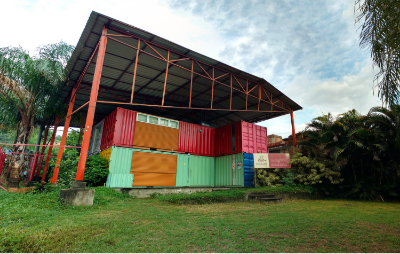
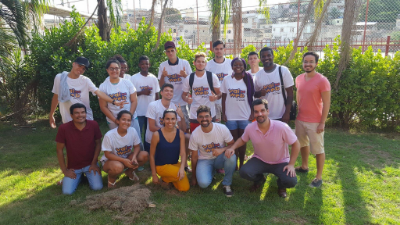

Turma CPX Alemão
Educap, Janeiro 2017
O Vai Na Web é uma jornada de aprendizado em desenvolvimento web e cidadania dentro de organizações de base comunitária. Ele acontece de 09 de Janeiro a 31 de Março de 2017 na ONG Educap no Complexo do Alemão, Rio de Janeiro. Esse é um curso intensivo, onde os alunos vão aprender fazendo. É uma forma de trocar conhecimento com esse grande cérebro coletivo que é a internet, e usar o poder da informação para mudar tudo o que precisa ser mudado. A expectativa é que os alunos possam aplicar as melhores tecnologias em seus próprios contextos e se fortalecerem profissionalmente e pessoalmente.